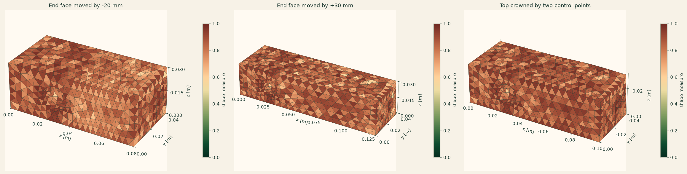
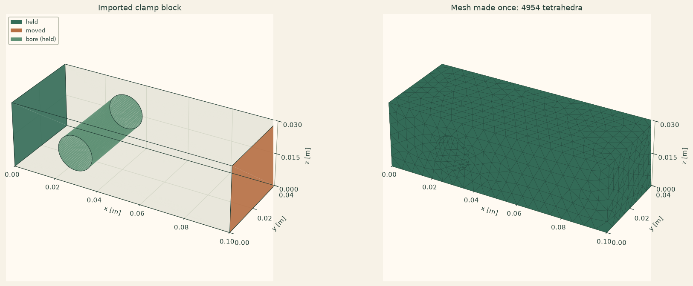

Docs › Examples › Modifying an imported CAD part by deforming its mesh
Mesh deformation · 3D
Modifying an imported CAD part by deforming its mesh
A clamp block read from a STEP file, made shorter and longer and given a crowned top by moving the nodes of one mesh instead of remodelling.

What it computes
OneSimulation reads the block with its named faces, meshes it once and moves the end face by -20 to +30 mm while the bore and the opposite end are held; the other nodes follow a harmonic displacement field, and control points with radial basis functions crown the top. The same lengths made on the CAD model with move_faces serve as reference. The script that builds the STEP file comes with the notebook.
What it checks
The volume of every deformed mesh changes by exactly the closed-form d W H (-24.0000 to +36.0000 cm3), the CAD variants match (L + d) W H - pi r^2 W exactly, the bore nodes do not move at all, and the smallest shape measure stays between 0.485 and 0.495 against 0.492 for the original mesh of 4,954 cells.
Geometry
The notebook starts at the import of the CAD file deforming_imported_cad_part.step: STEP (AP242), readable by any CAD program, with the names of the faces that the boundary conditions use. Put it next to the notebook.

The geometry script
The script deforming_imported_cad_part_geometry.py builds the geometry with the CAD objects of OneSimulation and writes the file. Change a dimension there, run it, and run the notebook again.
"""Geometry of the OneSimulation example "Modifying an imported CAD part by deformation".
Builds a clamp block (100 x 40 x 30 mm with a bore of 16 mm across it) with the CAD objects of
OneSimulation, names the faces the example moves or holds and writes deforming_imported_cad_part.step.
"""
from onesim.cad.d3 import Box, Cylinder
block = Box(length=0.1, width=0.04, height=0.03) - Cylinder(
radius=0.008, length=0.04, origin=(0.03, 0.0, 0.015), axis=(0, 1, 0)
).named("bore")
block = block.grouped(
held=block.boundaries.x_min,
moved=block.boundaries.x_max,
bore=block.boundaries["bore.outer_wall"],
top=block.boundaries.z_max,
)
block.save("deforming_imported_cad_part.step")The notebook
The complete notebook, cell by cell. Run it to produce the figures and the comparison printout.
Imported parts often need a quick change of a dimension for a parameter study: a longer arm, a thicker flange, a top surface with a crown. Editing the CAD model means rebuilding and meshing again for every value; moving the nodes of one existing mesh is far cheaper and keeps the cell numbering, so results of different variants can be compared node by node.
deformed(mesh, {face: displacement}, fixed=[...]) (onesim.meshing.adaptation) moves the nodes of the named faces, holds those of the fixed faces and spreads the motion through the body by solving a Laplace problem for the displacement (method "harmonic"); control points away from the nodes need the radial basis method "rbf". A move that would turn cells inside out is refused; steps carries a large move out in smaller ones.
The block comes from the CAD file deforming_imported_cad_part.step, written by deforming_imported_cad_part_geometry.py; it names the faces held, moved, bore and top.
Reference. With the bore and the opposite end held, moving the end face by \(d\) changes \(L\times W\times H\) to \((L+d)\times W\times H\) and leaves the bore as it is: \(V(d) = (L+d)WH - \pi r^2 W\). The same change on the CAD model is move_faces.
import numpy as np
from onesim.cad.exchange import load
from onesim.meshing import TetrahedralMesher
from onesim.meshing.adaptation import deformed
from onesim.meshing.quality import quality
from onesim.visualization import plots, theme
theme.set()Geometry and mesh
load returns the solid with the named face groups of the file. The mesh is made once.
part = load("deforming_imported_cad_part.step")
faces = part.boundaries
length, width, height, radius = 0.1, 0.04, 0.03, 0.008
mesh = TetrahedralMesher(target_size=0.005, curvature_angle=0.4).generate(part)
print(
f"faces: {', '.join(face.id for face in part.faces)}; groups held, moved, bore, top"
)
print(f"mesh: {mesh.cell_count} tetrahedra, {len(mesh.coordinates)} nodes")
view = plots.Camera(elevation=30, azimuth=-60)
fig = plots.figure(1, 2, size=(16, 6))
plots.geometry(
part,
selection={"held": faces.held, "moved": faces.moved, "bore (held)": faces.bore},
labels=False,
camera=view,
title="Imported clamp block",
ax=fig[0],
)
plots.mesh(
mesh,
groups=("all",),
legend=False,
camera=view,
title=f"Mesh made once: {mesh.cell_count} tetrahedra",
ax=fig[1],
)
plots.show()Changing the length
The end face moves by -20 to +30 mm; the shortening is carried out in two steps. For comparison each length is also made on the CAD model with move_faces and meshed anew.
moves = [-0.02, 0.01, 0.02, 0.03]
variants = {
move: deformed(
mesh,
{faces.moved: (move, 0.0, 0.0)},
fixed=[faces.held, faces.bore],
steps=2 if move < 0 else 1,
)
for move in moves
}
remodelled = {move: part.move_faces(faces.moved, (move, 0.0, 0.0)) for move in moves}
volume = lambda d: (length + d) * width * height - np.pi * radius**2 * width
start = quality(mesh)
print(
f"original mesh: volume {start['size'].sum() * 1e6:.4f} cm3 (closed form {volume(0.0) * 1e6:.4f}), smallest shape {start['shape'].min():.3f}"
)
print(
" move [mm] deformed mesh [cm3] change closed-form change CAD move_faces [cm3] closed form smallest shape cells"
)
for move, variant in variants.items():
report = quality(variant)
print(
f"{1e3 * move:9.0f} {report['size'].sum() * 1e6:18.4f} {(report['size'].sum() - start['size'].sum()) * 1e6:10.4f}"
f" {move * width * height * 1e6:16.4f} {remodelled[move].measure * 1e6:21.4f} {volume(move) * 1e6:13.4f}"
f" {report['shape'].min():15.3f} {variant.cell_count:7d}"
)
print(
f"the bore nodes did not move: largest displacement there {np.abs(variants[0.03].displacement[np.unique(np.asarray(mesh.facets(faces.bore)))]).max():.1e} m"
)A crowned top surface
Two control points on the top face are lifted by 1.5 mm and lowered by 0.5 mm; with the radial basis method the top bends smoothly between them while the bottom, the ends and the bore stay.
crowned = deformed(
mesh,
[
(
np.array([[0.07, 0.02, height], [0.045, 0.02, height]]),
np.array([[0.0, 0.0, 0.0015], [0.0, 0.0, -0.0005]]),
)
],
method="rbf",
fixed=[faces.held, faces.moved, faces.bore, faces.z_min],
)
print(
f"crowned top: volume {quality(crowned)['size'].sum() * 1e6:.4f} cm3, highest point {1e3 * np.asarray(crowned.coordinates)[:, 2].max():.3f} mm, "
f"smallest shape {quality(crowned)['shape'].min():.3f}"
)Figure
The shortest and the longest variant and the crowned top, coloured by the shape measure of their cells: the same cells, squeezed or stretched between the held bore and the moved end.
fig = plots.figure(1, 3, size=(21, 6))
plots.mesh(
variants[-0.02],
cell_values=quality(variants[-0.02])["shape"],
limits=(0, 1),
label="shape measure",
camera=view,
title="End face moved by -20 mm",
ax=fig[0],
)
plots.mesh(
variants[0.03],
cell_values=quality(variants[0.03])["shape"],
limits=(0, 1),
label="shape measure",
camera=view,
title="End face moved by +30 mm",
ax=fig[1],
)
plots.mesh(
crowned,
cell_values=quality(crowned)["shape"],
limits=(0, 1),
label="shape measure",
camera=view,
title="Top crowned by two control points",
ax=fig[2],
)
plots.show()Going further
Turn the end face with rigid_motion(axis=..., angle=...) for a tapered block, let deformed(..., remesh_below=...) mesh again where cells become too poor, or solve the same load case on every variant and compare the stresses node by node.